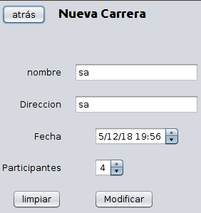

cierra esta pantalla
muestra las carreras sin terminar, al estár viendolas se desactiva el botón.
muestra las carreras terminadas, al pulsar aquí se desactiva el boton, se añade un campo con el ganador y se desactiva la modificacion de la carrera
modifica la carrera seleccionada
elimina la carrera seleccionada.
abre una pantalla con los participantes de la carrera.